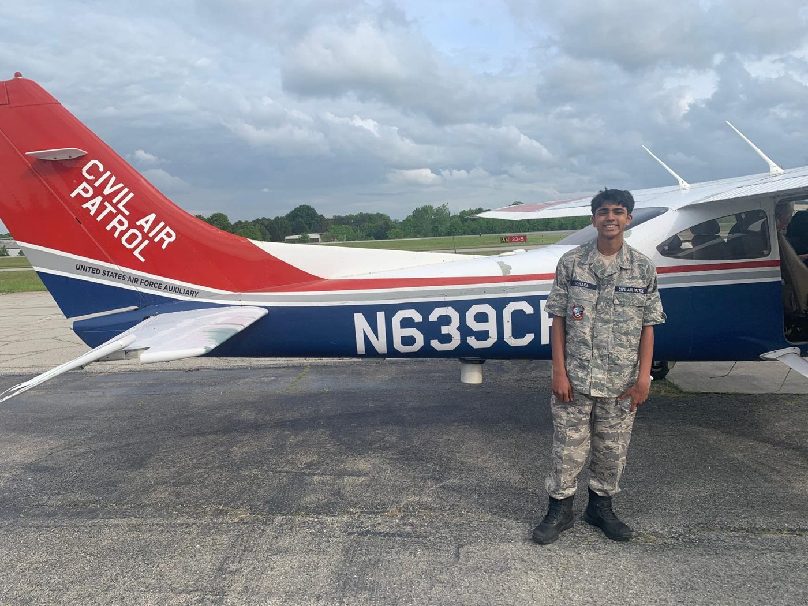

Civil Air Patrol
Georgia Wing Cadet Competition Captain
I led my team in Cadet Competition (honor guard, color guard, and drill) to the Georgia Wing state championship and 1st place in the Southeast Region. I completed the NCO leadership track and Encampment, a weeklong summer leadership training.